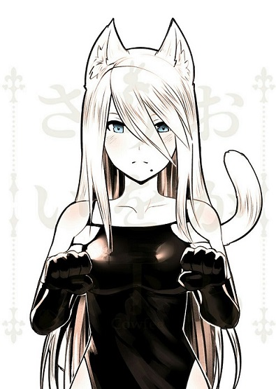
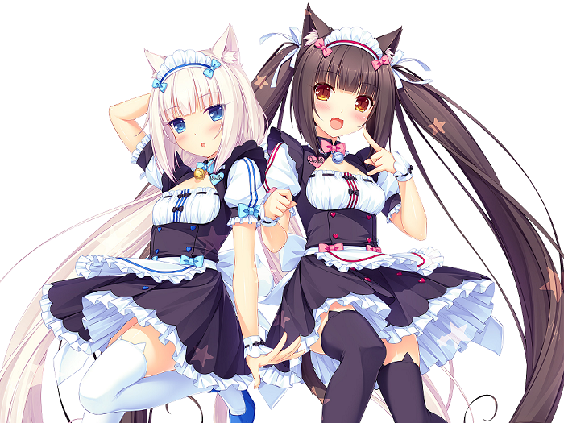

Плюсы
1.У них есть ушки
2.У них есть хвостик
3.Хвостик еще и пушистый
4.Они любят когда их гладят
Минусы
У НИХ НЕТ МИНУСОВ
Краткая теория о неко
Неко девочка(яп. 猫娘 нэкомусумэ, англ. Catgirl) — девушка, обладающая кошачьими ушками
(в дополнение к человеческим либо настоящими), хвостом или другими чертами семейства кошачьих,
в остальном имеет полностью человеческое тело. Неко девочки встречаются в различных жанрах художественной
литературы, в частности, в японских аниме и манге, в различного рода комиксах и видеоиграх,
а также в виртуальных интернет-сообществах, таких как Nekos в Second Life. Образ девушки-кошки
также часто используется для косплея.
